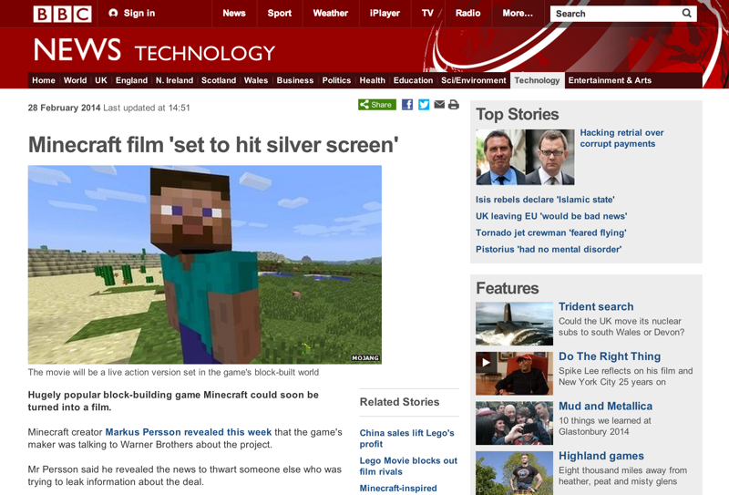
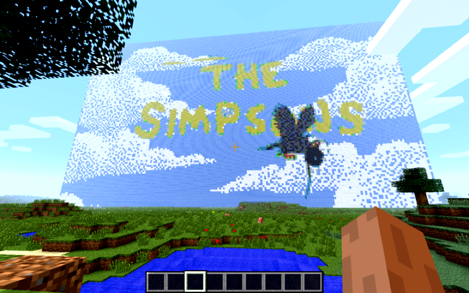
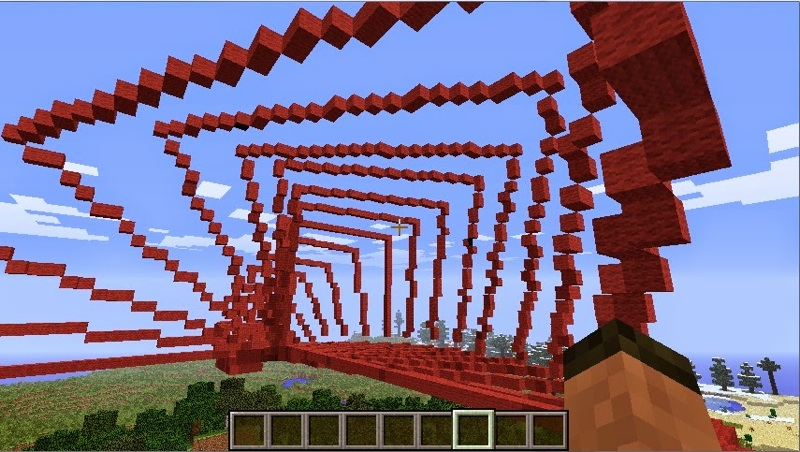
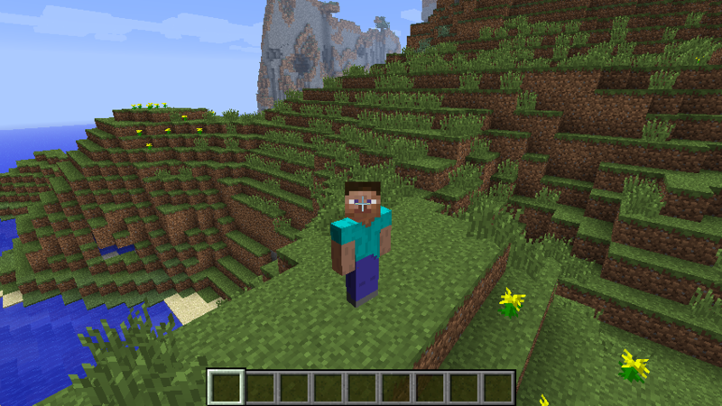
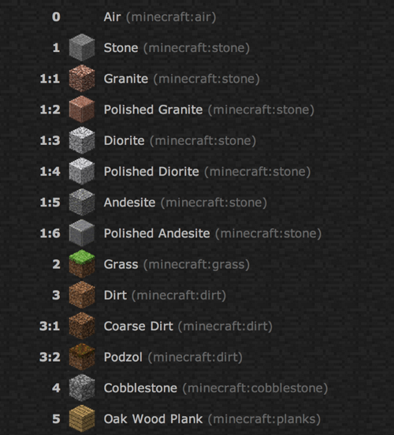
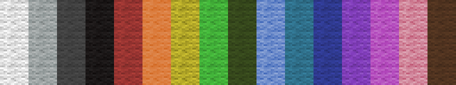
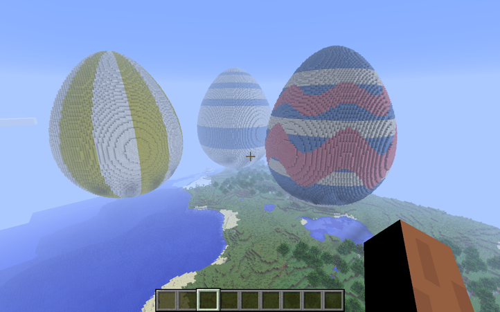
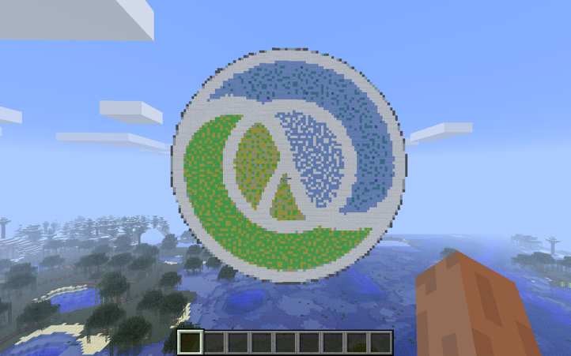
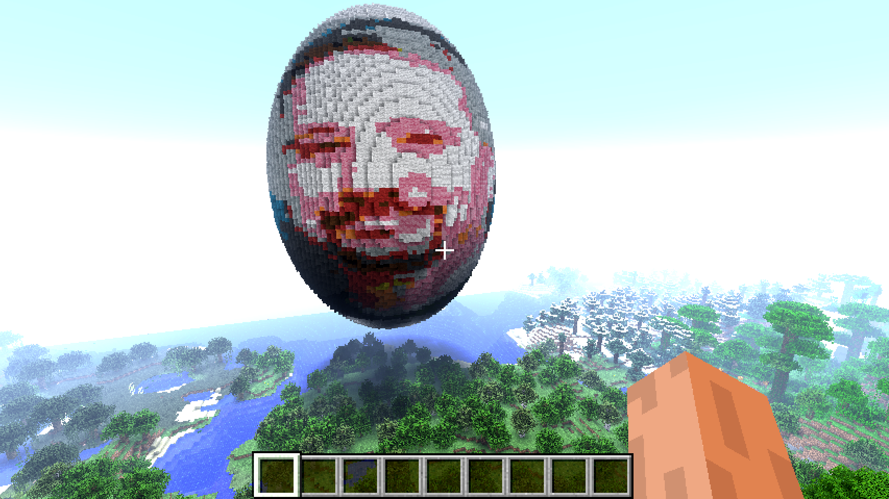
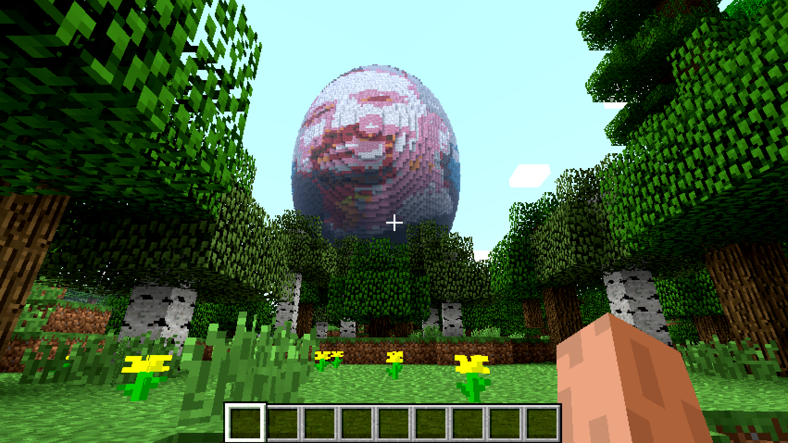

Blockbuster: Minecraft Movies
@henrygarner
What I won't be talking about
Goal
Why Minecraft?
- Minecraft being used as a teaching aid
- Provides motivating objectives for youngsters
- 3D world gives immediate feedback
Already bindings to Minecraft for Ruby and Python, but I wanted to be able to explore in Clojure.
Thanks
Many thanks to Martin O'Hanlon (http://stuffaboutcode.com)
Several Python libraries, including Minecraft Turtle
What I'll be showing you
- Redstone for interacting with Minecraft from Clojure
- PPM image file format
- tools.cli for parsing command line arguments
Does Minecraft have a public API?
- The official game doesn't
- The Raspberry Pi version does
The API is very limited
No Pi? No Problem!
- CraftBukkit is a version of the game server designed for plugin development
- RaspberryJuice plugin replicates API
Redstone
A library for interacting with Minecraft: Pi Edition
- Query the block at a coordinate
- Query the player's position
- Set blocks at coordinates
- Set the player's position
- Set a callback on block hit
- Send a message to the game chat
Example: Query a block
(require '[redstone.client :as mc]) (def server {:host "localhost" :port 4711}) ;; Query player's tile position (which block are they on?) (let [player-position (mc/player-tile-position server) ;; Position is {:x x, :y y, :z z} position-under-player (update-in player-position [:y] dec)] (-> server ;; What sort of block is it? (mc/block-at position-under-player))
Example: Query a block
Blocks are maps
Minecraft is a world of blocks. There are hundreds of different blocks made out of different materials.
In redstone these are represented as a map.
(mc/block-at position-under-player) ;; Might return something like: => {:id 4 :data 0}
Blocks
Example: Setting
;; Positions are maps too (def position {:x 25 :y 55 :z 22}) (mc/set-block-at! server position {:id 4 :data 0}) ;; ...is equivalent to (mc/set-block-at! server position :cobblestone) ;; Block names are kebab-case... (mc/set-block-at! server position :red-flower) ;; ...with optional data values (mc/set-block-at! server position :red-flower) ;; Poppy (mc/set-block-at! server position :red-flower:4) ;; Tulip
Coloured Wool
(mc/set-block-at! server position :wool:0) ;; White (mc/set-block-at! server position :wool:1) ;; Orange (mc/set-block-at! server position :wool:2) ;; Magenta ;; ...etc ;; Convenience names (mc/set-block-at! server position :red-wool)
Arguments
(defprotocol RPCArgument (as-rpc-arg [_])) (extend-protocol RPCArgument clojure.lang.Keyword (as-rpc-arg [kw] (when-let [{:keys [id data]} (get name->block kw)] [id data])) java.lang.Number (as-rpc-arg [x] x) java.lang.String (as-rpc-arg [s] s) java.util.Map (as-rpc-arg [xs] (remove nil? ((juxt :x :y :z :id :data) xs))) java.util.List (as-rpc-arg [xs] (flatten (map as-rpc-arg xs))) java.lang.Boolean (as-rpc-arg [tf] (if tf 1 0)))
I/O, I/O, it's off to work we go
Format minecraft consumes:
namespaced.command(list,of,args)
Redstone API:
(mc/set-block-at! server {:x 1 :y 2 :z 3} :red-wool)
;; Resolves to:
"world.setBlock(1,2,3,35,14)"
Query / Command
Redstone API is just named query and command fns
(def block-at "The block at the specified position" (query "world.getBlockWithData" #(->> (s/split % #",") (map parse-long) (zipmap [:id :data])))) (def set-block-at! "Sets the block at the given coordinates" (command "world.setBlock"))
Striking gold
;; Define a handler (defn midas-touch [server event] (mc/set-block-at! server (:position event) :gold-block)) ;; Register the handler (mc/listen! server :block:hit midas-touch)
Minecraft doesn't support push events, so this is done with polling inside a future.
What's it good for?
Originally started working on this around Easter
Maths!
Project Icon
An image for the Redstone README
Colour dithering, wanted a generic image import
PPM image format
It's grossly inefficient, but very easy to read.
P6 4 4 255 000000000000 000000000000 000000000000 000000000000
…a black 4x4 pixel image.
ImageMagick
Generating PPMs is easy with ImageMagick
$> convert input.png -resize 10 output.ppm
Reading
- File contains arbitrary data
- Using nio's mmap rather than slurp
(require '[nio.core :refer [mmap buffer-seq]]) ;; Returns a sequence of unsigned byte values (0-255) as longs (->> (mmap "/file/path.ppm") buffer-seq (map #(bit-and % 0xff)))
RGB
Stolen from the Clojure docs for min-key
(defn distance-squared [c1 c2] (->> (map - c1 c2) (map #(* % %)) (reduce +))) (def block-colours {[221 221 221] :wool [219 126 63] :orange-wool ;; ... [150 53 49] :red-wool [26 23 23] :black-wool}) (defn rgb->block [colour-map rgb-triple] (colour-map (apply min-key (partial distance-squared rgb-triple) (keys colour-map))))
What happens if…?
What happens if…?
Bruce Egg
The Wizard of Oz
Image Sequences
We can use ffmpeg to convert a movie into a sequence of jpegs.
$> ffmpeg -i input.mov -y output-dir/%09d.jpg
Then step through each frame and render it.
tools.cli
Parses arguments passed to a `-main` function.
(require '[clojure.tools.cli :refer [parse-opts]]) (def cli-options [["-f" "--file FILE" "File path"] ["-w" "--width BLOCKS" "Width of the screen in blocks" :parse-fn #(Long/parseLong %) :default 25] ["-c" "--clear" "Whether space should be cleared for the screen"]]) (defn -main [& args] (let [options (parse-opts args cli-options)] (when (:clear options) (clear-space! options)) (draw-movie! options)))
Blockbuster
https://github.com/henrygarner/blockbuster
Instructions for Minecraft server installation linked from README
Thank You
https://github.com/henrygarner/redstone https://github.com/henrygarner/blockbuster https://github.com/henrygarner/ldnclj-talk-july-2014

@henrygarner
CTO, Likely